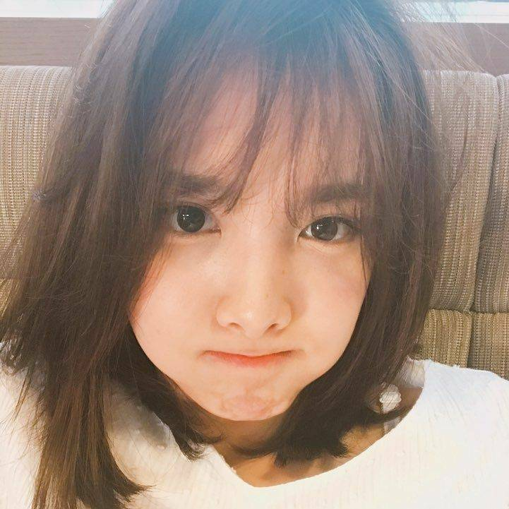
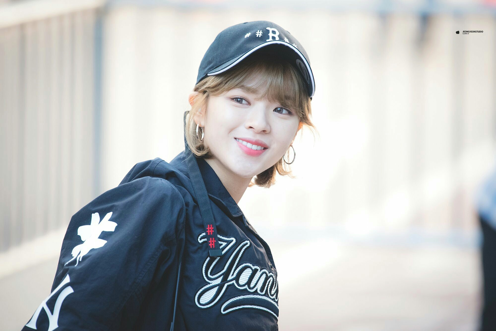
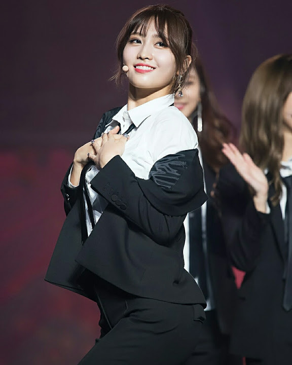
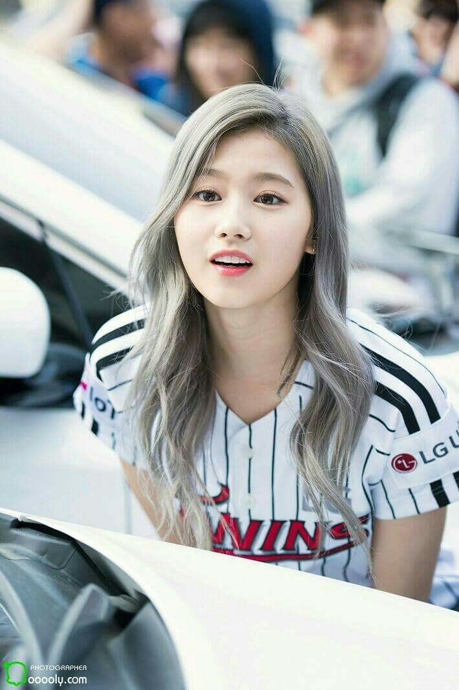
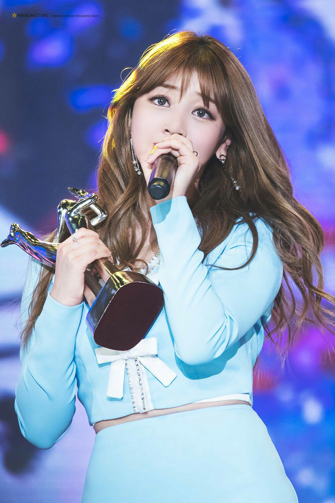
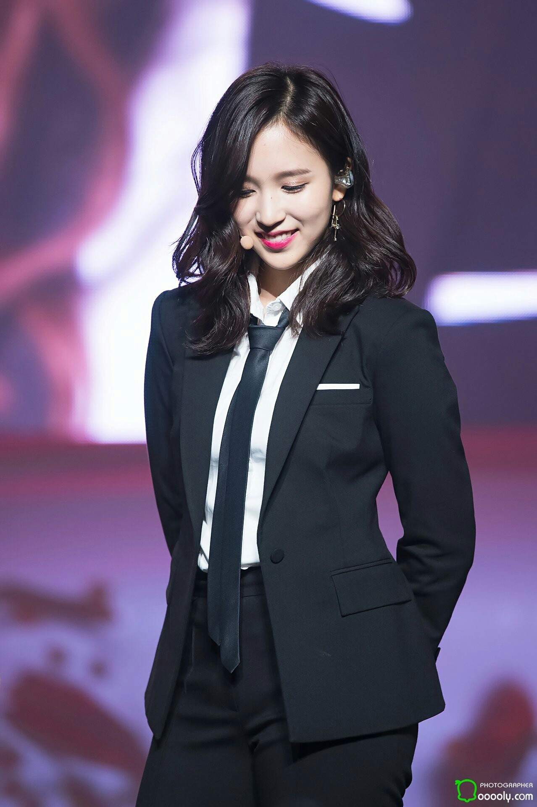
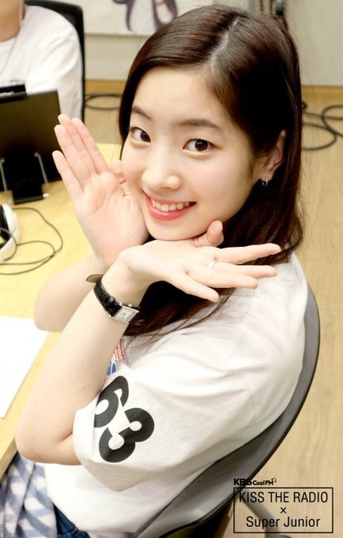
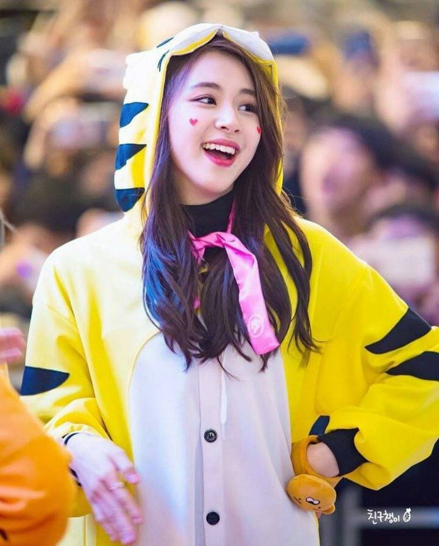
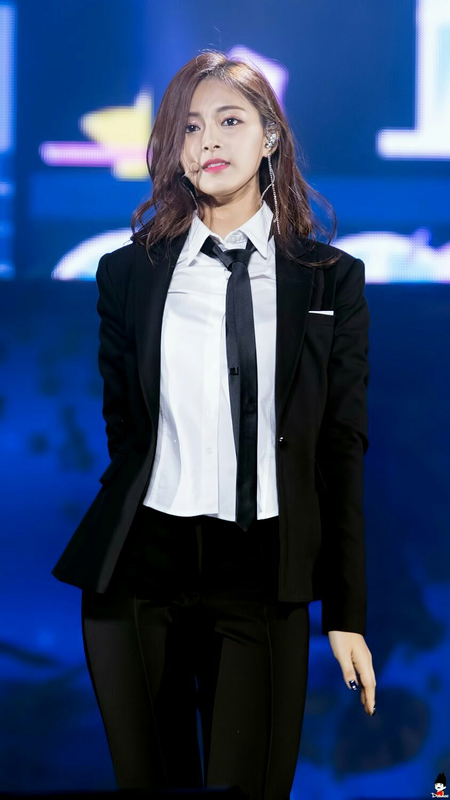

- 林娜璉(韓：임나연 /日：ナヨン)

- - 生日1995年9月22日，隊內擔任主唱，為隊裡最年長，但因為性情有些像小孩，又要人家照顧，於是有著「偽忙內」以及「林三歲」這兩個常見別稱。
天生門牙比較大，而這也是一大可愛點。在出道前左腳在交通意外造成嚴重受傷，其造成的後遺症導致娜璉有時會腳軟而失去平衡。
整個人開朗可愛，那豪邁的笑聲總是一種正能量，讓人可以瞬間忘卻煩憂，感受那份純淨，在不知不覺之際，就深陷無法自拔了呢！
- 俞定延(韓：유정연/日：ナヨン)

- - 生日1996年11月1日，隊內擔任清潔擔當，因為主要負責團員宿舍中的清潔管理部分，當然與她天生有的潔癖脫不了干係。
親大姊為韓國藝人孔升妍，父親俞昌俊是資深韓國餐廳主廚，於是在宿舍中也會展現廚藝來為團員下廚一下，也很照顧所有的團員們，在宿舍的休閒興趣是玩樂高積木，與團員MOMO為室友住雙人房。
定延在鏡頭前很放得開，也是因為如此，曾經被粉絲訓過「不要亂玩顏」，但真性情的她最後還是貫徹始終，同時也增加更多的粉絲；總是很照顧忙內們，是個令人很有依賴感的姊姊呢！
- 平井桃〈MOMO〉(韓：히라이 모모/日：モモ)

- -生日1996年11月9日，隊內擔任領舞，其舞蹈能力是隊上全體認可的，平時看起來傻呆呆迷糊迷糊的，但只要一跳起舞來，鐵定不同凡響。
食量大是一大特色，只要有食物就能忘卻一切煩惱，最喜歡的食物是豬蹄，簡單來說，可能就只有吃跟跳舞能讓她有精神吧！
迷糊迷糊的她是日本Line最長者，懼高與害怕恐怖遊樂設施的她，在實境節目中常常放聲大叫，這種傻呆但卻在跳舞時那種反差萌，可讓她擁有一大票的粉絲呢！
- 湊崎紗夏〈Sana〉(韓：미나토자키 사나/日：サナ)

- - 生日1996年12月29日，在隊內是黑洞擔當。之所以會這麼說，是因為她常常不是跌倒就是打翻東西等小失誤，個性開朗的她，常常將笑容掛在臉上。
雖然是日本人，但韓文學習良好，甚至有時還能說韓文說得跟韓國人一樣溜，讓很多人懷疑她是不是本來就是韓國人。
笑容甜美的她，是隊上的開心果，雖然總是傻里傻氣，但認真起來可是很恐怖的呢！時不時就抱抱隊員親親臉龐，因為這樣，甚至連別團成員都成為了朋友！
- 朴志效(韓：박지효/日：ジヒョ)

- - 生日1997年2月1日，是TWICE這個團體中的隊長，同時也是主唱，因為聲音宏亮，因此有綽號叫做「麥克風」。
水汪汪的大眼是她的特色，雖然不是團裡年紀最長，但卻要擔起照顧這另外八人的責任，是個盡責的大家長呢！
歌唱功力了得的她，絕對沒有高傲自負，總是團隊裡那個默默善後的有這麼樣一個好隊長的TWICE，肯定可以繼續走個十幾二十年的！。
- 名井南〈Mina〉(韓：묘이 미나/日：ミナ)

- -生日1997年3月24日，是隊裡的黑天鵝，有著十一年芭蕾經驗的她，不但筋骨柔軟，全身上下還散發著一種典雅的氣息，但你肯定看不出來吧，相信嗎？她可是對電玩與遊戲很在行的！
不如同一般日本人說英文時的特殊發音，因為出生在美國的她，英文可是隊上的佼佼者，說起英文還自然又動聽呢！
雖然是隊上聲音最微小的，個性也比較害羞內斂，但隨著與團員們的熟識，也漸漸活潑了起來，被ONCE們常以「南后」稱呼的她，看見氣質非同一般呢！
- 金多賢(韓：김다현/日：ダヒョン)

- -生日1998年5月28日，為伙食團團長的多賢，因為皮膚白皙到感覺會自體發亮，而且筋骨異常柔韌，因此有「豆腐」一別稱。
有著「永遠能找到鏡頭在哪」這特殊能力的多賢，無論距離多遠，都能夠準確地感應出鏡頭並且美美拍照。
成為伙食團最早畢業的她，剛踏入韓國成年的階段，綜藝感也十分強烈，最早是因為在教會跳的「老鷹舞」而出名。
- 孫彩瑛(韓：손채영/日：チェヨン)

- -生日1999年4月23日，在隊內與多賢同為rap擔當，在SIXTEEN時期還會自己寫rap，這樣的她更是參與了回歸專輯填詞的創作過程。
她很愛繪畫，隨身都會帶著一本冊子讓她得以把心情畫下，甚至後來也參與專輯封面繪製、代言品牌的彩繪以及周邊圖案設計的工作。
與定延共同被稱做「無趣兄弟」，但其實常常無心的一句話卻會戳中團員們的笑點，小小隻的她還有「小猛獸」、「辛巴」等可愛的別稱噢！
- 周子瑜(韓：저우쯔위/日：ツウィ)

- -生日1999年6月14日，在隊內擔任團寵忙內，也相信大家對於子瑜並不陌生，她可是我們台灣人的驕傲呢！
年紀最小的她，卻有著全隊最高的身高，同時，還是TWICE中的寶貝。有著驚豔全場容顏的她，還是世界百大美女第八名呢！
年紀小小卻已經成功出道，這背後的辛酸她從未怨過半句，看著她的努力，總會激勵著我們同年紀的孩子，想要為了自己更加努力呢！加油吧！